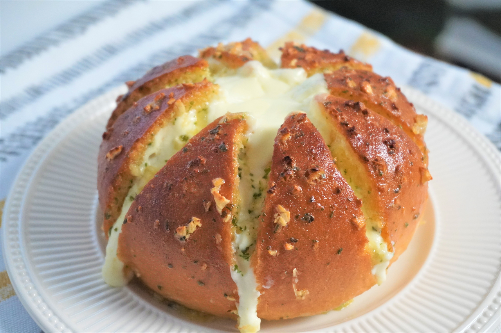

Korean Garlic Bread

Ingredients
- Bread Rolls
- 250g Cream Cheese
- 1 Tbsp Cream
- 5 Diced cloves of Garlic
- 1 cup Butter
- Parmesan cheese, shredded
- Parsley
- Chives
- ½ tsp Salt
- ½ tsp Onion Powder
- 1 tsp Black Pepper
- 1 tsp Mustard Powder
Instructions
- Mix the cream cheese, cream, salt and onion powder in a bowl.
- Transfer to a Ziplock bag and cut corner creating a piping bag.
- Cut through the bread roll on angles.
- Pipe cream cheese mixture into the bread roll.
- Melt the butter and mix with parsley, chives, black pepper, mustard powder and garlic.
- Dip the bread roll into the garlic butter mixture.
- Top with a swirl of cream cheese and grate Parmesan cheese on top.
- Bake for 20 minutes at 350 degrees.